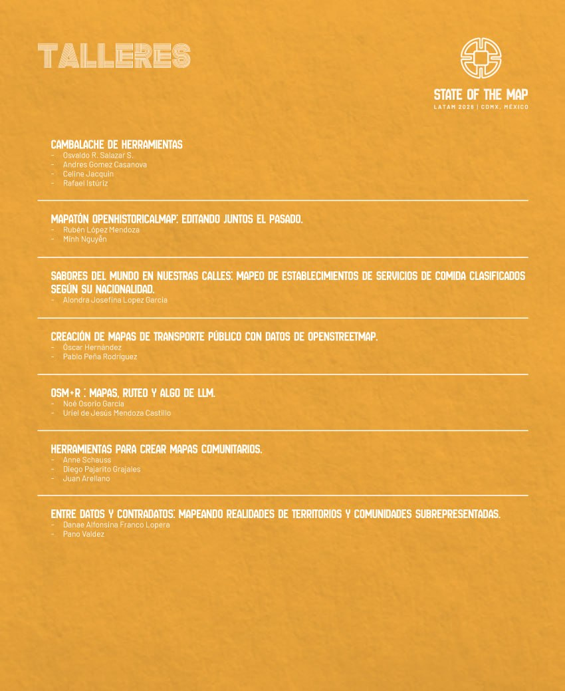

State of the Map Latam 2026
Por Osvaldo, 2026-10-14 13:00
En esta ocasión, la octava presentación del State of the Map Latam 2026 (SotM Latam 2026) se llevará a cabo en la Ciudad de México (CDMX), México, entre el 27 y el 29 de octubre.
El State of the Map Latam (SotM Latam) es la conferencia regional de la Comunidad Latinoamericana de OpenStreetMap (OSM), cuyo objetivo es reunir a cartógrafos, desarrolladores, investigadores, académicos, gobiernos, organizaciones civiles y entusiastas de OSM para compartir experiencias, aprender, conectar y seguir colaborando en el proyecto de mapeo abierto más grande del mundo.
Aquí pueden encontrar mayor información.
Sede
El Antiguo Colegio de San Ildefonso.
Programa
Aquí pueden revisar la programación de las charlas y talleres que se realizarán.
Registro
Aquí se pueden registrar al evento.
Taller : Cambalache de Herramientas
En este taller se invitará a compartir una demostración de la herramienta favorita, plugin, truco o función favorita en el mapeo en OSM.
Será una sesión relajada y disfrutable, no se requiere que sean un expertx de dicha herramienta para compartir lo que sabes, pero simplemente enseñar lo poco o mucho que permita a otras personas adentrarse en ella, dando así una probadita de lo que más les gusta usar para el mapeo.


Allá nos vemos :-)